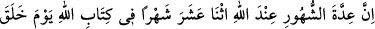
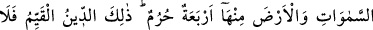
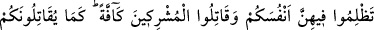
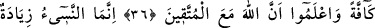
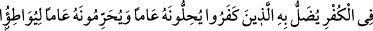
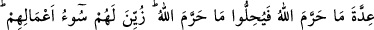
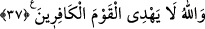

HARAM AYLAR VE
ONLARI ERTELEMEK
(NESÎ)
36. Gökleri ve yeri yarattığı gündeki yazısına göre Allah’ın katında ayların sayısı
on ikidir. Bunlardan dördü haram(ay)larıdır. İşte doğru din budur. O aylar içinde
kendinize zulmetmeyin ve (Allah’a) ortak koşanlar nasıl sizinle topyekün
savaşıyorlarsa, siz de onlarla topyekün savaşın ve bilin ki Allah müttakîlerle
beraberdir.
37. (Haram ayları) ertelemek ancak küfürde daha ileri gitmektir. İnkar edenler,
onunla saptırılır. Onu bir yıl helal bir yıl haram sayarlar ki Allah’ın haram kıldığının
sayısını denk getirip Allah’ın haram kıldığını helal yapsınlar. Yaptıkları işin
kötülüğü, kendilerine süslü gösterildi. Allah, kâfirler topluluğunu hidâyete
erdirmez.
“Gökleri ve yeri yarattığı gündeki yazısına göre Allah’ın katında” yâni O’nun
hükmünde “ayların sayısı on ikidir.” Yani hac, umre, oruç, zekat, bayramlar vb. gibi
şer’î hükümlerin kendileriyle alâkalı ayların sayısı Allah katında on ikidir.
Bunlar hilalden hilale itibar edilen kamerî Arap aylarıdır. Bu aylar bazen otuz, bazen
de yirmi dokuz gün olur. Kamerî yıl, üç yüz elli dört gün sekiz saattir.
Rûmî ve Fârisî aylar ise farklıdır. Bunlar bazen otuz gün bazen de otuz bir gün olur.
Şemsî (güneşin hareketine göre olan) yıl üç yüz altmış beş gün altı saattir.
Güneşe ait on iki burç vardır. Güneş, bir sene zarfında bunların tamamında seyreder.
Ay ise bu burçlarda her ay seyreder. Bu burçlar şunlardır:
Koç, Boğa, İkizler, Yengeç, Arslan, Başak, Terazi, Akrep, Yay, Oğlak, Kova, Balık.
Şemsî seneyi kullananlar, Güneş merkezinin Koç burcunun baş noktasına girişinden